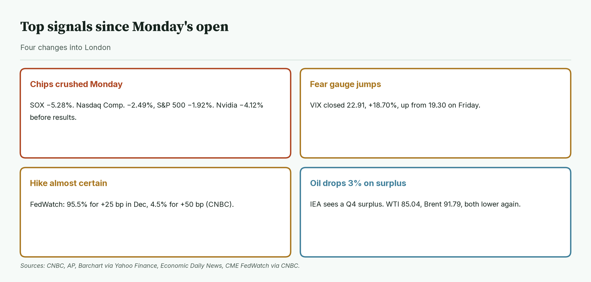
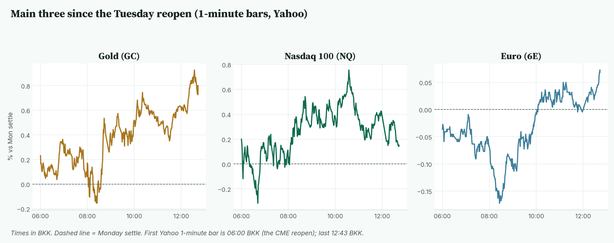
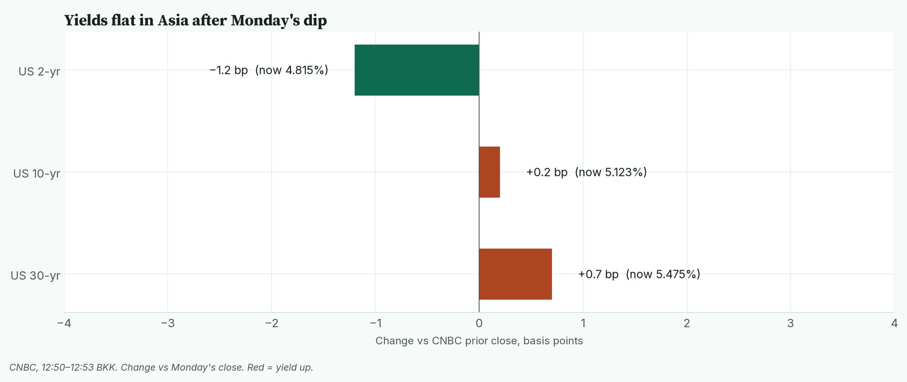
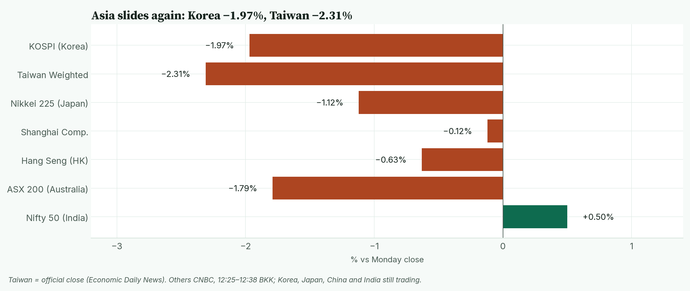
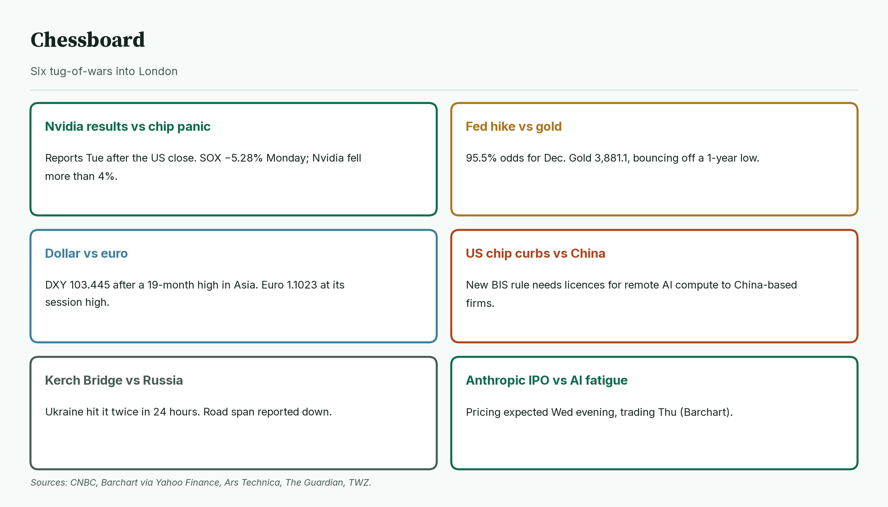
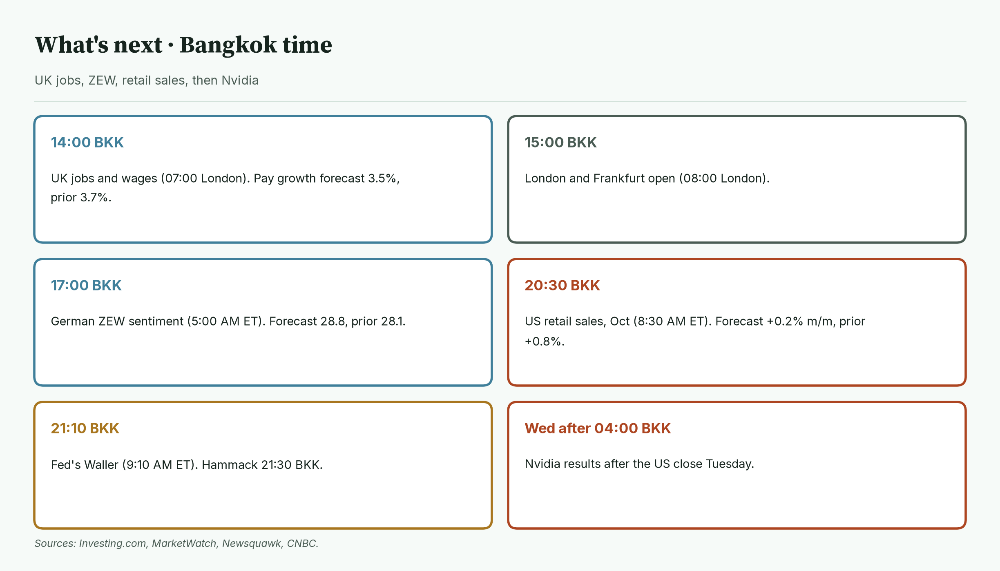
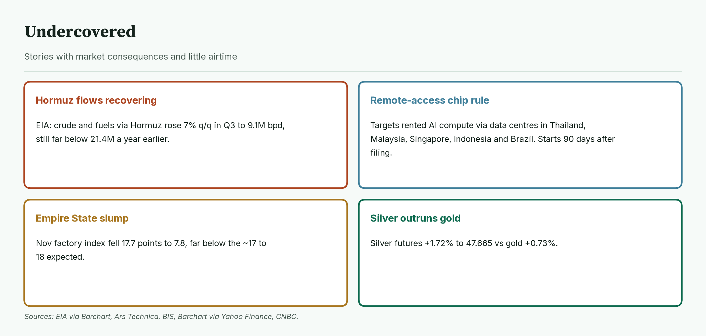
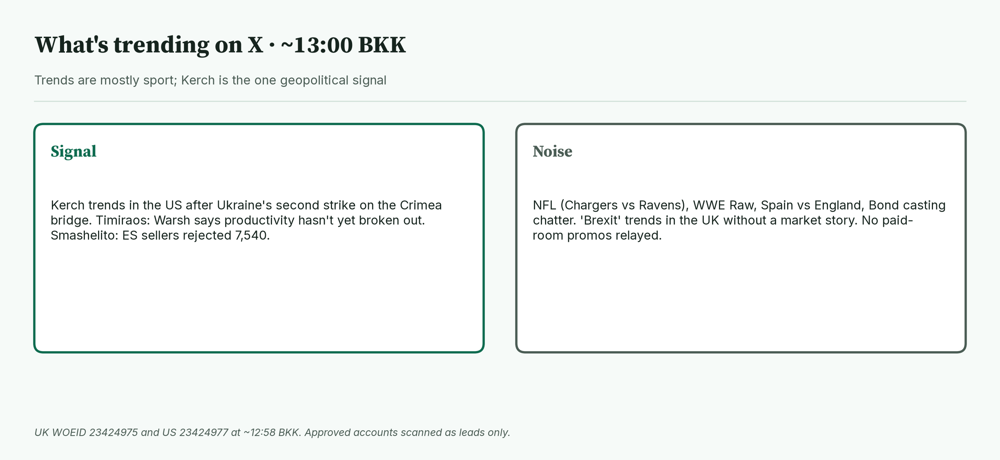

April · Market Intel, pre-London · Tue Nov 17, 2026 · ~13:00 BKK / ~06:00 London
Headline: Wall Street's chip rout sent the VIX up 18.70% to 22.91, and Asia followed lower. Overnight, the main three steadied. Gold futures are 3,881.1 (+0.73%), Nasdaq futures 27,323.50 (+0.14%) and euro futures 1.1023 (+0.06%), at its session high. US retail sales at 20:30 BKK decide the session, with Nvidia's results after the US close hanging over everything.
So what: Monday was the damage day. Asia is the aftershock. London opens into a pause, not a recovery.
 Caption: Futures at 12:43 BKK versus Monday's settle. All three main contracts are slightly up. The VIX tile is Monday's close, after an 18.70% jump.
Caption: Futures at 12:43 BKK versus Monday's settle. All three main contracts are slightly up. The VIX tile is Monday's close, after an 18.70% jump.
1) Top signals Three changes since Monday's open. Chips crashed, a December hike is nearly certain, and oil slid. |
 Caption: Three changes since Monday's open. Chips crashed, a December hike is nearly certain, and oil slid.
Caption: Three changes since Monday's open. Chips crashed, a December hike is nearly certain, and oil slid.
- Chips crushed Monday. The chip index (SOX) fell 5.28%. The Nasdaq Composite lost 2.49% and the S&P 500 1.92% (CNBC, AP).
- A December Fed hike is nearly certain: 95.5% odds of +25 bp, 4.5% for +50 bp (CME FedWatch via CNBC).
- Oil fell about 3% Monday after the IEA forecast a fourth-quarter supply surplus (Barchart via Yahoo Finance).
2) Main instruments The three main contracts since the Tuesday reopen, as a % move from Monday's settle. Gold and the euro both bottomed at 08:26 BKK and climbed into London. Nasdaq peaked at 10:36 BKK and faded. |
 Caption: The three main contracts since the Tuesday reopen, as a % move from Monday's settle. Gold and the euro both bottomed at 08:26 BKK and climbed into London. Nasdaq peaked at 10:36 BKK and faded.
(Quotes are Yahoo Finance futures at 12:43 BKK (05:43 London), matching CNBC. Session highs and lows use Yahoo 1-minute bars from the 06:00 BKK CME reopen (18:00 New York Monday). The first bar is 06:00 BKK.)
Caption: The three main contracts since the Tuesday reopen, as a % move from Monday's settle. Gold and the euro both bottomed at 08:26 BKK and climbed into London. Nasdaq peaked at 10:36 BKK and faded.
(Quotes are Yahoo Finance futures at 12:43 BKK (05:43 London), matching CNBC. Session highs and lows use Yahoo 1-minute bars from the 06:00 BKK CME reopen (18:00 New York Monday). The first bar is 06:00 BKK.)
- Gold futures (GC, Dec): 3,881.1, +0.73%, at 12:43 BKK. Driver: a bounce after Monday's slide to its lowest spot price since October 2025 (CNBC). Monday's settle was 3,853.0, down 0.86% on the day. Today's range is 3,845.9 (08:26 BKK) to 3,889.6 (12:35 BKK). It is near the top.
- Nasdaq 100 futures (NQ, Dec): 27,323.50, +0.14%, at 12:43 BKK. Driver: a pause after Monday's chip rout, with Nvidia reporting tonight US time. Monday's settle was 27,284.25, down 2.68% on the day. Today's range is 27,180.50 (06:43 BKK) to 27,498.00 (10:36 BKK).
- Euro futures (6E, Dec): 1.1023, +0.06%, at 12:43 BKK. Driver: the dollar gave back a little after touching a fresh 19-month high in Asia (CNBC). Monday's settle was 1.1016. Today's range is 1.0997 (08:26 BKK) to 1.1024 (12:42 BKK). It is at the high.
- Takeaway: all three are holding up, but Monday's losses are mostly intact.
Context. The dollar index (DXY, the dollar against six major currencies) is 103.445, −0.10% (CNBC, 12:53 BKK). The 10-year US yield (what the US government pays to borrow for 10 years) is 5.123%, up 0.2 basis points (CNBC, 12:52 BKK; a basis point is 0.01 percentage point). The VIX (the "fear gauge" built from S&P 500 option prices) closed Monday at 22.91, +18.70% (CNBC). US oil (CL, December) is 85.04, −0.79% (Yahoo, 12:42 BKK). S&P 500 futures (ES) are 7,432.50, −0.09% (Yahoo, 12:43 BKK). Bitcoin is $64,780, −0.29% versus CNBC's previous close (CNBC/Coin Metrics, 12:53 BKK).
3) Overnight US session
- Chip stocks led a third straight down day. The S&P 500 closed at 7,416.59 and the Dow fell 739.38 points (CNBC, AP).
- Nvidia fell more than 4% before its results. It faces scrutiny over export-control compliance after its CEO's exit (Barchart via Yahoo Finance).
- Broadcom fell 3.9% and AMD 5.6% (AP).
- Weak data added to it. The Empire State factory index (a New York-area manufacturing survey) fell 17.7 points to 7.8, against forecasts near 17 to 18 (Barchart, MarketWatch).
- Warsh gave no rate guidance. He said productivity "hasn't yet broken out definitively and structurally to the upside" (Federal Reserve).
- Cleveland Fed's Hammack backed "slow, steady" hikes at successive meetings (Barchart via Yahoo Finance).
- Takeaway: AI doubts and a hawkish Fed hit stocks at the same time.
4) Rates, FX and oil Yields barely moved in Asia. Monday's dip in the 10-year came from safe-haven buying, not a change in Fed bets. |
 Caption: Yields barely moved in Asia. Monday's dip in the 10-year came from safe-haven buying, not a change in Fed bets.
Caption: Yields barely moved in Asia. Monday's dip in the 10-year came from safe-haven buying, not a change in Fed bets.
- CNBC, 12:50 to 12:53 BKK: 2-year 4.815% (−1.2 bp), 10-year 5.123% (+0.2 bp), 30-year 5.475% (+0.7 bp).
- Monday, the 10-year yield fell 2.0 bp to 5.115% as stocks sold off and oil fell (Barchart via Yahoo Finance).
- Dollar. The dollar touched a fresh 19-month high in Asia (CNBC). EUR/USD is 1.1011 (CNBC, 12:53 BKK).
- Yen. USD/JPY is 159.10 (CNBC, 12:53 BKK), just under 160, with intervention risk in focus (FXStreet).
- Oil. WTI 85.04 and Brent (January) 91.79, −0.70% (CNBC, 12:43 BKK). Middle East exports are recovering faster than demand, the IEA said (CNBC).
- Takeaway: rates are steady, the dollar is firm, and oil is losing its war premium.
5) Why it matters Asia fell across the board except India. Taiwan is its official close. The rest are CNBC prints from 12:25 to 12:38 BKK, with several markets still trading. |
 Caption: Asia fell across the board except India. Taiwan is its official close. The rest are CNBC prints from 12:25 to 12:38 BKK, with several markets still trading.
Caption: Asia fell across the board except India. Taiwan is its official close. The rest are CNBC prints from 12:25 to 12:38 BKK, with several markets still trading.
- Asia took the hit again: KOSPI −1.97%, Taiwan −2.31% at the close, ASX 200 −1.79%, Nikkei −1.12% (CNBC; Taiwan from Economic Daily News).
- Taiwan swung hard. It rose to 41,533 early, then fell to 39,786 before closing at 40,092.11. TSMC fell 2.03% (Economic Daily News).
- China's markets hit their lowest in more than a year before Thursday's Xi, Trump and Putin meeting in Shenzhen (FXStreet).
- Mentor: when the VIX jumps nearly 19% in a day, traders cut risk everywhere. That is why Asia fell even with US futures flat.
- Takeaway: London opens with the AI trade under stress, and Europe's own chip names may follow.
6) Chessboard Six tug-of-wars into London. Nvidia and the Fed move the main three fastest. |
 Caption: Six tug-of-wars into London. Nvidia and the Fed move the main three fastest.
Caption: Six tug-of-wars into London. Nvidia and the Fed move the main three fastest.
- Nvidia results vs chip panic. SOX −5.28% Monday. Results come Tuesday after the US close.
- Fed hike vs gold. 95.5% odds for December. Gold 3,881.1, bouncing off a one-year low.
- Dollar vs euro. DXY 103.445. The euro is 1.1023, at its session high.
- US chip curbs vs China. A new Commerce rule targets rented AI computing for China-based firms (Ars Technica).
- Kerch Bridge vs Russia. Ukraine struck the Crimea bridge twice in 24 hours. Traffic is suspended (The Guardian, TWZ).
- Anthropic IPO vs AI fatigue. Pricing is expected Wednesday evening, with trading Thursday (Barchart via Yahoo Finance).
- Takeaway: the board leans toward caution until Nvidia reports.
7) Leading indicators (BKK times, ET in brackets) UK jobs open the day, retail sales at 20:30 BKK is the big print, and Nvidia lands after the US close. |
 Caption: UK jobs open the day, retail sales at 20:30 BKK is the big print, and Nvidia lands after the US close.
Caption: UK jobs open the day, retail sales at 20:30 BKK is the big print, and Nvidia lands after the US close.
- 14:00 (2:00 AM ET): UK jobs and wages. Pay growth forecast 3.5%, prior 3.7% (Sruth calendar).
- 15:00: London and Frankfurt open.
- 17:00 (5:00 AM ET): German ZEW investor sentiment. Forecast 28.8, prior 28.1 (Sruth calendar).
- 19:30 (7:30 AM ET): Fed's Musalem (MarketWatch).
- 20:30 (8:30 AM ET): US October retail sales. Forecast +0.2% month on month, prior +0.8% (MarketWatch). This is the session decider.
- 21:10 (9:10 AM ET): Fed's Waller. 21:30: Fed's Hammack. 21:30: US stocks open (MarketWatch, Investing.com).
- Wed 02:25 (2:25 PM ET): Fed's Williams. Nvidia reports after the US close (after 04:00 BKK Wednesday). FOMC minutes Thu 02:00 BKK (Investing.com, MarketWatch).
- Takeaway: a strong retail print would firm up hike bets and pressure gold.
8) Scenarios and levels
- Strong retail sales. Yields and the dollar rise. Watch GC 3,845.9, NQ 27,180.50 and 6E 1.0997 for breaks lower.
- In line (the base case). Ranges likely hold until Nvidia. GC 3,845.9 to 3,889.6, NQ 27,180.50 to 27,498.00, 6E 1.0997 to 1.1024.
- Weak retail sales. Hike bets ease a little. Gold and the euro could push above 3,889.6 and 1.1024.
- These are possible paths, not forecasts.
9) Undercovered Four stories with little airtime. They touch oil supply, chips in Thailand, US factories and silver. |
 Caption: Four stories with little airtime. They touch oil supply, chips in Thailand, US factories and silver.
Caption: Four stories with little airtime. They touch oil supply, chips in Thailand, US factories and silver.
- Hormuz flows are recovering. Crude and fuel shipments rose 7% quarter on quarter in Q3 to 9.1 million barrels a day, still far below 21.4 million a year earlier (EIA via Barchart).
- The chip rule reaches Thailand. It targets rented AI computing through data centres in Indonesia, Malaysia, Singapore, Thailand and Brazil. It takes effect 90 days after filing (Ars Technica).
- The Empire State survey slumped to 7.8 from 25.5 (MarketWatch).
- Silver is outrunning gold. Silver futures are 47.665, +1.72% (Yahoo, 12:42 BKK).
- Takeaway: oil supply is healing while the tech fight with China widens.
10) What's trending on X (~13:00 BKK) UK and US trends are mostly sport. Kerch is the one geopolitical signal. |
 Caption: UK and US trends are mostly sport. Kerch is the one geopolitical signal.
Caption: UK and US trends are mostly sport. Kerch is the one geopolitical signal.
- US: Chargers, Ravens, #WWERaw, Kerch.
- UK: Bond, #ImACeleb, Spain, Brexit.
- Signal: Kerch trends after Ukraine's second strike on the Crimea bridge (The Guardian).
- Approved accounts: Timiraos quoted Warsh's productivity hedge, which matches the Fed's text. Smashelito said ES sellers rejected 7,540 on Monday and called it a downside trend day. Tavi Costa had no new posts. vwaptrader1 had none either. No paid-room promos relayed.
- Noise: NFL (Chargers vs Ravens), WWE, Spain vs England, Bond casting chatter.
Bottom line: the market is catching its breath before Nvidia. For Jim: Nasdaq at 27,323.50 sits mid-range, 27,180.50 to 27,498.00. Gold at 3,881.1 sits near its 3,889.6 high. The euro at 1.1023 sits at its 1.1024 high. Interpretive note: retail sales at 20:30 BKK is the first test; Nvidia is the bigger one. 🔮 Interpretive, not data: the 17th reduces to 8, the number of power and reckoning. A fitting tag for the day the market's biggest company faces its numbers. Symbol, not signal.
Confidence: Futures levels: high (Yahoo, matching CNBC). Session ranges: Yahoo 1-minute bars from the 06:00 BKK reopen. Yields, DXY, VIX, yen, Bitcoin, Brent and Asia: CNBC, time-stamped. Taiwan close: Economic Daily News. US closes: CNBC and AP. Fed odds and gold: CNBC. Warsh: Federal Reserve. Nvidia, Hammack, oil, Empire State, Anthropic IPO: Barchart via Yahoo Finance and MarketWatch. Chip rule: Ars Technica. Kerch: The Guardian, TWZ. Calendar: MarketWatch, Investing.com, Sruth. X posts: leads only. Removed: a Taiwan broker's claim about a Texas data-centre pause (not confirmed by a primary source).
Charts: /workspace/april-charts/2026-11-17/pre-london-{scoreboard,signals,main3,rates,asia,chess,leading,under,xsplit}.png |